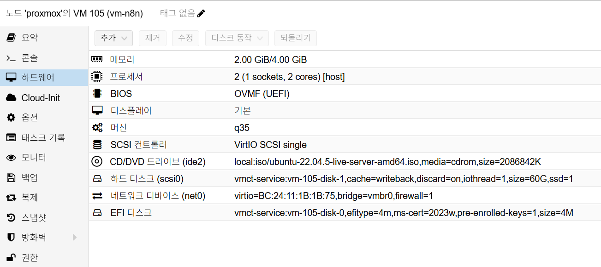

n8n Installation
개요
이 문서는 Synology Reverse Proxy(TLS 종료) 뒤에서 VM 1대 기준으로
Docker Compose를 사용해 n8n과 PostgreSQL을 설치하고,
초기 검증까지 수행하는 절차를 설명합니다.
사전 조건
- OS: Ubuntu 22.04 LTS 이상
- VM 리소스:
2 vCPU / 4GB RAM이상 - 디스크: OS
60GB이상 - n8n 버전:
v2.10.2 - 도메인:
n8n.semtl.synology.me - Reverse Proxy 라우팅 준비:
https://n8n.semtl.synology.me->http://<N8N_VM_IP>:5678 - VM 방화벽에서
5678/tcp(내부 경로) 허용 - 필수 패키지:
docker,docker compose plugin,openssl
Proxmox VM H/W 참고 이미지
아래 이미지는 Proxmox Hardware 탭 기준의 n8n VM 구성 예시입니다.

캡션: 2 vCPU, 2GB ~ 4GB RAM, q35, OVMF (UEFI), OS Disk 60GB, vmbr0
네트워크 기준
net0단일 NIC 사용 (192.168.0.x)- 예시 VM IP:
192.168.0.175
배치 원칙
n8n애플리케이션과PostgreSQL을 동일 VM의 Compose 스택으로 구성- 설치/운영 파일 경로는 사용자 홈(
~/n8n) 기준으로 관리 - 백업 단순화를 위해 named volume 대신 bind mount(호스트 폴더) 사용
- 외부 노출은 Reverse Proxy(TLS) 경유를 기본 원칙으로 사용
- 워크플로/자격증명 암호화를 위해
N8N_ENCRYPTION_KEY를 고정 관리
설치 절차
1. Docker/Compose/OpenSSL 설치 및 확인
Ubuntu 22.04.5 Server 기준으로, 아래 명령으로 Docker Engine, Docker Compose Plugin, OpenSSL을 먼저 설치합니다.
# 패키지 인덱스 갱신 및 필수 유틸 설치
sudo apt update
sudo apt install -y ca-certificates curl gnupg openssl
# Docker 공식 APT 저장소 GPG 키 등록
sudo install -m 0755 -d /etc/apt/keyrings
curl -fsSL https://download.docker.com/linux/ubuntu/gpg \
| sudo gpg --dearmor -o /etc/apt/keyrings/docker.gpg
sudo chmod a+r /etc/apt/keyrings/docker.gpg
# Docker 공식 저장소 등록(Ubuntu codename 자동 감지)
ARCH="$(dpkg --print-architecture)"
CODENAME="$(. /etc/os-release && echo \"$VERSION_CODENAME\")"
echo "deb [arch=$ARCH signed-by=/etc/apt/keyrings/docker.gpg] \
https://download.docker.com/linux/ubuntu $CODENAME stable" \
| sudo tee /etc/apt/sources.list.d/docker.list >/dev/null
# Docker/Compose 설치
sudo apt update
sudo apt install -y docker-ce docker-ce-cli containerd.io docker-compose-plugin
# 현재 사용자를 docker 그룹에 추가
sudo usermod -aG docker $USER
newgrp docker
설치 확인:
docker --version
docker compose version
openssl version
2. 작업 디렉터리 생성
mkdir -p ~/n8n/{postgres-data,n8n-data,n8n-files}
cd ~/n8n
3. 환경 변수 파일 작성
# n8n 암호화 키 생성(최초 1회 생성 후 운영 중 변경 금지)
N8N_ENCRYPTION_KEY="$(openssl rand -hex 32)"
cat > ~/n8n/.env <<EOF
# n8n 버전
N8N_VERSION=2.10.2
# 외부 접근 도메인/URL
N8N_HOST=n8n.semtl.synology.me
N8N_EDITOR_BASE_URL=https://n8n.semtl.synology.me
WEBHOOK_URL=https://n8n.semtl.synology.me/
N8N_PROXY_HOPS=1
# 보안/실행 옵션
N8N_ENCRYPTION_KEY=${N8N_ENCRYPTION_KEY}
N8N_ENFORCE_SETTINGS_FILE_PERMISSIONS=true
N8N_RUNNERS_ENABLED=true
NODE_ENV=production
# 시간대
GENERIC_TIMEZONE=Asia/Seoul
TZ=Asia/Seoul
# PostgreSQL 연결 정보
POSTGRES_DB=n8n
POSTGRES_USER=n8n
POSTGRES_PASSWORD=127001
EOF
# .env 접근 권한 제한
chmod 600 ~/n8n/.env
N8N_VERSION=2.10.2는 2026-03-08 기준 최신 안정 버전입니다.
현재 문서의 Compose 파일 기준으로, 위 .env 변수들을 모두 정의하면
기동에 필요한 환경변수는 충족됩니다.
설치 시점에 아래 값은 반드시 원하는 값으로 교체합니다.
POSTGRES_PASSWORDN8N_ENCRYPTION_KEY(자동 생성값 유지)N8N_HOSTN8N_EDITOR_BASE_URLWEBHOOK_URL
참고:
- n8n
Owner계정(이메일 기반)은 첫 로그인 후 UI에서 생성합니다. - n8n
v1.0+부터 인스턴스 Basic Auth 환경변수는 지원되지 않습니다. N8N_ENCRYPTION_KEY는 위 명령으로 자동 생성되며 백업 시 반드시 포함합니다.
4. Compose 파일 작성
cat > ~/n8n/docker-compose.yml <<'EOF'
services:
postgres:
image: postgres:16
container_name: n8n-postgres
restart: unless-stopped
environment:
- POSTGRES_DB=${POSTGRES_DB}
- POSTGRES_USER=${POSTGRES_USER}
- POSTGRES_PASSWORD=${POSTGRES_PASSWORD}
volumes:
# PostgreSQL 데이터 디렉터리(호스트 폴더 백업 대상)
- ./postgres-data:/var/lib/postgresql/data
healthcheck:
test: ['CMD-SHELL', 'pg_isready -U ${POSTGRES_USER} -d ${POSTGRES_DB}']
interval: 5s
timeout: 5s
retries: 10
n8n:
image: docker.n8n.io/n8nio/n8n:${N8N_VERSION}
container_name: n8n
restart: unless-stopped
depends_on:
postgres:
condition: service_healthy
ports:
- "5678:5678"
environment:
- NODE_ENV=${NODE_ENV}
- N8N_ENFORCE_SETTINGS_FILE_PERMISSIONS=${N8N_ENFORCE_SETTINGS_FILE_PERMISSIONS}
- N8N_RUNNERS_ENABLED=${N8N_RUNNERS_ENABLED}
- N8N_HOST=${N8N_HOST}
- N8N_PROTOCOL=https
- N8N_PORT=5678
- N8N_EDITOR_BASE_URL=${N8N_EDITOR_BASE_URL}
- WEBHOOK_URL=${WEBHOOK_URL}
- N8N_PROXY_HOPS=${N8N_PROXY_HOPS}
- N8N_ENCRYPTION_KEY=${N8N_ENCRYPTION_KEY}
- GENERIC_TIMEZONE=${GENERIC_TIMEZONE}
- TZ=${TZ}
- DB_TYPE=postgresdb
- DB_POSTGRESDB_HOST=postgres
- DB_POSTGRESDB_PORT=5432
- DB_POSTGRESDB_DATABASE=${POSTGRES_DB}
- DB_POSTGRESDB_USER=${POSTGRES_USER}
- DB_POSTGRESDB_PASSWORD=${POSTGRES_PASSWORD}
- DB_POSTGRESDB_SCHEMA=public
volumes:
# n8n 데이터(워크플로, 크리덴셜 등) 저장 경로
- ./n8n-data:/home/node/.n8n
# n8n 내부에서 접근할 사용자 파일 경로
- ./n8n-files:/files
EOF
5. 컨테이너 기동
cd ~/n8n
docker compose pull
docker compose up -d
docker compose ps
6. Synology Reverse Proxy 연결
DSM Control Panel > Login Portal > Advanced > Reverse Proxy에서 아래와 같이
규칙을 생성합니다.
- Source
- Protocol:
HTTPS - Hostname:
n8n.semtl.synology.me - Port:
443 - Destination
- Protocol:
HTTP - Hostname:
<N8N_VM_IP> - Port:
5678
Custom Header에 아래 항목을 추가합니다.
X-Forwarded-Proto: httpsX-Forwarded-Port: 443X-Forwarded-Host: n8n.semtl.synology.me
설치 검증
# 컨테이너 상태 확인
docker compose -f ~/n8n/docker-compose.yml ps
# n8n 헬스체크 확인
curl -fsS http://127.0.0.1:5678/healthz
# 도메인 경유 응답 확인
curl -I https://n8n.semtl.synology.me
# 로그 확인(최근 100줄)
docker compose -f ~/n8n/docker-compose.yml logs --tail=100 n8n
검증 기준:
n8n,n8n-postgres컨테이너가Up상태/healthz요청이 정상 응답- UI 로그인 페이지 접근 가능(
https://n8n.semtl.synology.me)
운영 메모
- 버전 업데이트:
.env의N8N_VERSION변경 후docker compose pull && docker compose up -d - 백업 대상:
~/n8n/postgres-data,~/n8n/n8n-data,~/n8n/.env,~/n8n/n8n-files - 민감 정보 관리:
.env의 인증 정보/암호는 비밀관리 시스템으로 이관 권장
7. 설치 직후 정리 후 스냅샷
스냅샷은 반드시 불필요 파일(찌꺼기) 정리 후 생성합니다.
7.1 불필요 파일 정리
# /tmp 전체 삭제
sudo rm -rf /tmp/*
# /var/tmp 전체 삭제
sudo rm -rf /var/tmp/*
# 미사용 패키지 정리
sudo apt autoremove -y
# APT 캐시 정리
sudo apt clean
# journal 로그 전체 정리
sudo journalctl --vacuum-time=1s
# 현재 사용자 bash 히스토리 비우기
cat /dev/null > ~/.bash_history && history -c
7.2 Proxmox 스냅샷 생성
- n8n 첫 로그인 및
Owner계정 생성 후 생성 - 운영 워크플로/크리덴셜 등록 전 생성
- Proxmox에서 n8n VM 선택
Snapshots > Take Snapshot실행- 이름 예시:
n8n-install-clean-v1 - 설명 예시:
text
[설치]
- n8n : v2.10.2
- hostname : n8n.semtl.synology.me
- reverse proxy : synology(443) -> n8n vm(5678)
- data path : ~/n8n/n8n-data
- files path : ~/n8n/n8n-files
- postgres path : ~/n8n/postgres-data
- id : admin@semtl.synology.me
- pw : 패스워드
Include RAM은 비활성화(권장)
트러블슈팅
증상: 로그인 후 자격증명 복호화 오류
- 원인:
N8N_ENCRYPTION_KEY변경 또는 누락 - 조치: 최초 운영 시점의
N8N_ENCRYPTION_KEY를 복구하고 재기동
증상: 웹훅 URL이 내부 IP로 생성됨
- 원인:
N8N_HOST,N8N_PROTOCOL,WEBHOOK_URL불일치 또는 Reverse ProxyX-Forwarded-*헤더 누락 - 조치:
.env와 Compose 환경 변수를 도메인 기준으로 맞추고, Synology Reverse Proxy Custom Header를 재확인한 뒤 재기동